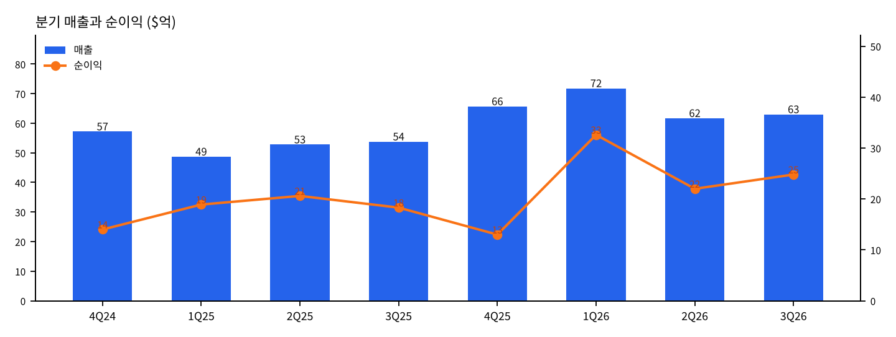
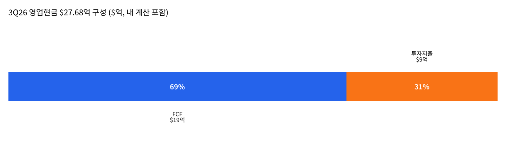
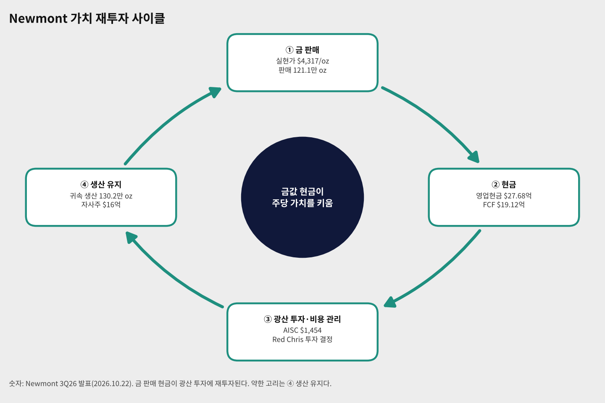

Newmont는 금·구리·은을 캐서 판다. 금값이 높으면 이익이 커지고, 광산 생산량·비용이 이익의 폭을 정한다.
| 항목 | 내용 |
|---|---|
| 종목 | Newmont (NEM) · NYSE · 금 광업 · 콜로라도 덴버 |
| 최근 분기(3Q26) | 매출 $63.6억, 조정 EPS $2.20 |
| 핵심 자산 | Nevada Gold Mines, Cadia, Peñasquito, Lihir, Red Chris, Yanacocha |
| 직원 수 | 약 44,100명(트레이딩뷰) |
| 멀티플 | PER·PEG·P/S는 08~10 항목 표 참조 |
| 직책 | 인물 | 역할·특징 |
|---|---|---|
| CEO | 나타샤 빌조엔(Natascha Viljoen) | 3Q 기록 조정 EPS와 비용 가이던스 개선을 설명 |
| CFO | (확인 필요) | 회사 공개 자료 기준 확인 필요 |
경영 스타일: 현금 환원 + 선택과 집중. 자산을 정리하고 FCF로 자사주를 줄여 주당 노출을 늘린다.
Red Chris 같은 대규모 지하 채굴을 준비한다. 투자 결정은 2027년 초, 상업 생산은 2033년.
자사주 소각으로 주당 FCF 노출을 키운다.
다음 실적발표는 세 가지 질문에 답하는 자리다.
1. 금값이 높은 수준을 유지하나?
2. 금 생산량이 회복되나?
3. 4Q 현금흐름이 낮아지는 영향은?
한 줄 판정 규칙: 첫 질문(금값)이 유지되면 약한 고리인 ② 생산량 감소가 이익을 가리는 정도가 줄어든다고 본다.
일정: 4Q26 실적 발표는 2027.02.25 예정(트레이딩뷰). 2027 가이던스가 나온다.
| 분기 | 매출 | 순이익 | EPS | 조정 EPS | 특이 사항 |
|---|---|---|---|---|---|
| 4Q24 | $57.2억 | $14.0억 | 1.24 | 1.40 | |
| 1Q25 | $48.7억 | $18.9억 | 1.68 | 1.25 | |
| 2Q25 | $52.8억 | $20.6억 | 1.85 | 1.43 | |
| 3Q25 | $53.8억 | $18.3억 | 1.67 | 1.71 | |
| 4Q25 | $65.7억 | $13.0억 | 1.19 | 2.52 | |
| 1Q26 | $71.8억 | $32.6억 | 3.00 | 2.90 | |
| 2Q26 | $61.7억 | $22.0억 | 2.06 | 2.10 | |
| 3Q26 | $63.0억 | $24.8억 | 2.35 | 2.20 | 조정 EPS 3Q 기록, 금 판매량 감소·금값 하락, AISC 개선 |
매출은 트레이딩뷰 스캐너의 분기 총매출이라 회사가 발표한 순매출과 다를 수 있다. 조정 EPS는 일회성 항목을 뺀 값이다. 매출·순이익·EPS(GAAP 희석)는 트레이딩뷰 스캐너, 조정 EPS는 트레이딩뷰 실적 페이지의 Reported 값이다. 분기 정렬은 오래된 분기→최신이다.

흐름 요약: 최근 분기 매출은 $63.0억로 전년 동기 $53.8억 대비 +17.1%, 순이익은 $24.8억(전년 $18.3억)다. 최근 4분기 GAAP EPS는 $8.60, 조정 EPS는 $9.72다.
| 항목 | 내용 | 3Q26 금액 | 비고 |
|---|---|---|---|
| FCF | 영업현금 − 투자지출 | $19.12억 | −13%(분기 대비) |
| 투자지출(내 계산) | 설비·광산 개발 | $8.56억 | 영업현금 $27.68억에서 FCF를 뺀 값 |

영업현금의 약 69%(내 계산)가 FCF로 남았다.
Newmont는 책임 있게 금과 금속을 생산해 주주에게 가치를 돌려주는 것을 목표로 한다.
| 축 | 내용 |
|---|---|
| 가격 | 실현 금 $4,317/온스 |
| 비용 | AISC $1,454 |
| 환원 | 자사주 $16억 |

| 이동평균 | 값 | 종가 대비 | 위치 |
|---|---|---|---|
| 5일선 | $108.23 | -5.8% | 종가 아래 |
| 20일선 | $112.85 | -9.7% | 종가 아래 |
| 50일선 | $116.40 | -12.4% | 종가 아래 |
| 100일선 | $112.75 | -9.6% | 종가 아래 |
| 200일선 | $111.99 | -9.0% | 종가 아래 |
52주 고가 $135.29(2026-08-25)·저가 $81.34(2025-11-21) 범위에서 종가 $101.92는 모든 이동평균선 아래이고.
| 규칙 | 기준 | 현재 값 | 신호 |
|---|---|---|---|
| 장기 추세 필터 | 종가 vs 200일선 | $101.92 < $111.99 | 매도 |
| 중장기 교차 | 50일선 vs 200일선 | $116.40 > $111.99 | 매수 |
| 단기 교차 | 20일선 vs 50일선 | $112.85 < $116.40 | 매도 |
| 돈키언 채널 | 55일 고가 $130.71 / 저가 $100.58 | 중간값 $115.65 아래 | 매도 |
| 1개월 모멘텀 | 21거래일 수익률 | -13.0% (기준 $117.18) | 매도 |
| 3개월 모멘텀 | 63거래일 수익률 | -22.5% (기준 $131.58) | 매도 |
| 6개월 모멘텀 | 126거래일 수익률 | -5.9% (기준 $108.33) | 매도 |
| 12개월 모멘텀 | 252거래일 수익률 | +17.7% (기준 $86.60) | 매수 |
| 종합 (8개 평균) | -0.50 | 매도 |
해석: 매수 신호 2개(중장기 교차, 12개월 모멘텀), 매도 신호 6개(장기 추세 필터, 단기 교차, 돈키언 채널, 1개월 모멘텀, 3개월 모멘텀, 6개월 모멘텀). CTA 점수 -0.50(매도). 14일 ATR $5.28 (5.2%), 52주 고가 $135.29 · 저가 $81.34.
| 가격 | 기준 | 무엇이 바뀌나 |
|---|---|---|
| $131.58 | 3개월 모멘텀 기준가 | 종가가 이 가격 위면 3개월 신호 매수 |
| $130.71 | 55일 고가 | 돌파 시 채널 상단 갱신 |
| $117.18 | 1개월 모멘텀 기준가 | 종가가 이 가격 위면 1개월 신호 매수 |
| $115.65 | 돈키언 중간값 | 55일 채널 중간값 위/아래로 신호가 바뀜 |
| $111.99 | 200일선 | 종가가 이 선 위/아래인지로 장기 추세 신호가 바뀜 |
| $108.33 | 6개월 모멘텀 기준가 | 종가가 이 가격 위면 6개월 신호 매수 |
| $100.58 | 55일 저가 | 이탈 시 채널 하단 갱신 |
| $86.60 | 12개월 모멘텀 기준가 | 종가가 이 가격 위면 12개월 신호 매수 |
가격 수준은 신호가 바뀌는 기준선일 뿐 진입·청산 가격 제안이 아니다. 20일/50일 교차는 이동평균 자체가 움직여 단일 가격으로 표시하지 않았다. 일봉·주봉은 종가 기준 직접 계산(고저 데이터 미사용)이다.
| 악재 요인 | 내용 | 강도 |
|---|---|---|
| 생산량 감소 | 귀속 금 생산 −8% 전년 | 중간 |
| 4Q 현금 | Yanacocha 수처리·퇴직금 | 중간 |
| 비용 변동 | Lihir 등 광산별 비용 변동 | 참고 |
| 티커 | 회사 | PER(TTM) | PEG | P/S | EPS 성장(YoY) |
|---|---|---|---|---|---|
| NEM | Newmont | 10.5배 | 0.15 | 4.05배 | +68% |
| FCX | Freeport-McMoRan | 21.1배 | 0.33 | 2.88배 | +67% |
| AEM | Agnico Eagle | 13.4배 | 0.17 | 5.64배 | +74% |
| WPM | Wheaton Precious Metals | 26.2배 | 0.25 | 16.31배 | +103% |
| KGC | Kinross Gold | 7.2배 | 0.09 | 2.76배 | +80% |
비교 결론: Newmont의 PER 10.5배는 Freeport·Agnico Eagle·Wheaton보다 낮고 Kinross(7.2배)보다 높다. PEG 0.15는 Freeport(0.33)·Agnico Eagle(0.17)·Wheaton(0.25)보다 낮고 Kinross(0.09)보다 높다.
현금·부채는 트레이딩뷰 스캐너 값이다. 현금이 많고 부채는 낮다.
| 지표 | 값 | 출처 | 해석 |
|---|---|---|---|
| 현금·단기투자 | $88억 | 트레이딩뷰 스캐너(최근 분기) | |
| 총부채 | $56억 | 트레이딩뷰 스캐너(최근 분기) | |
| 순부채(부채−현금) | $-32억 | 내 계산 | 현금 대비 부채 부담 |
| 잉여현금흐름(TTM) | $101억 | 트레이딩뷰 스캐너 | |
| TTM 매출 | $262억 | 트레이딩뷰 스캐너 |
| 기준 | 매출 | P/S | 비고 |
|---|---|---|---|
| 내 계산(종가 ÷ 최근 4분기 매출 합계) | $262.2억 | 4.05배 | 시총은 정렬용 데이터에서만 사용 |
| 동종(트레이딩뷰) | – | FCX 2.88배 · AEM 5.64배 · WPM 16.31배 · KGC 2.76배 | 11.19 |
해석: FCF 9개월 $73억으로 자사주·배당을 충당한다. 금값이 하락하면 환원 여력이 줄어든다(내 해석).
EBITDA는 영업활동의 현금 창출력을 보는 지표이고, PEG는 PER을 EPS 성장률로 나눈 값이다. EBITDA·FCF는 트레이딩뷰 TTM 값이다.
| 지표 | 값 | 산출 |
|---|---|---|
| EBITDA(TTM) | $171억 | 트레이딩뷰 스캐너 |
| EBITDA 마진 | 65.3% | EBITDA ÷ TTM 매출(내 계산) |
| FCF 마진 | 38.5% | FCF ÷ TTM 매출(내 계산) |
| PER(GAAP TTM) | 11.9배 | $101.92 ÷ $8.60 |
| PER(조정 TTM) | 10.5배 | $101.92 ÷ $9.72 |
| 방식 | PER | EPS 성장률 | PEG | 판정 |
|---|---|---|---|---|
| 조정 EPS (TTM $9.72) | 10.5배 | +68% ($5.79 → $9.72) | 0.15 | 적극 매수 |
| GAAP EPS (TTM $8.60) | 11.9배 | +34% ($6.44 → $8.60) | 0.35 | 적극 매수 |
판정: 조정 EPS 기준 PEG 0.15 → 0.5 이하(적극 매수 구간) PEG 기준은 1.0 이하 투자 적격, 0.5 이하 적극 매수다. EPS 성장률은 최근 4분기 EPS 합계를 직전 4분기 합계와 비교한 값(내 계산)이고, 일회성 항목이 있으면 조정 EPS 행을 함께 본다.

Newmont의 사이클: 금 판매 현금이 광산 투자와 자사주에 쓰이고, 광산 개발이 생산을 유지하면 다시 금 판매 현금이 되는 순환이다.
| 고리 | 현재 숫자·근거 |
|---|---|
| ① 금 판매 | 3Q26 실현 금 가격 $4,317/oz · 금 판매 121.1만 온스 |
| ② 현금 | 영업현금 $27.68억 · FCF $19.12억 |
| ③ 광산 투자·비용 관리 | AISC $1,454(−10%) · Red Chris 투자 결정은 2027년 초 |
| ④ 생산 유지 | 귀속 금 생산 130.2만 온스(−8%) · 자사주 $16억 |
사이클의 특징: 약한 고리는 ④ 생산 유지다(귀속 금 생산이 전년보다 8% 줄었다). "(내 해석)"은 보고서 수치가 아닌 해석이다.